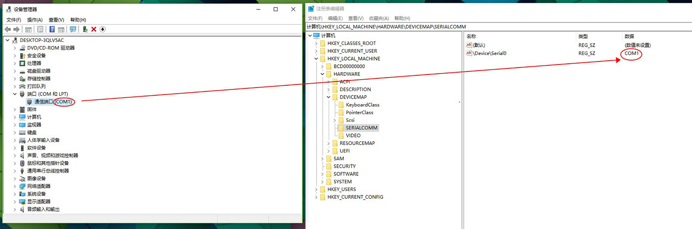

软件程序与硬件通过串口交换数据，首先要知道COM口，但是COM口是由计算机动态随机分配的。也就是说COM口的编号是变化的。因此我们在编程时不能将COM的编号写死。针对此问题我们想到的可能是将所有COM口读出来绑定到下拉框，软件启动后从下拉框选择需要的端口。或者写到配置文件，软件启动前在配置文件配置。不用说这两种方法都不是很理想。后来通过查询资料原来COM口的变化会在注册表中记录。如图。

这样我们就有一个想法，能不能通过监控注册表来监测COM口。于是有了下面代码。
1 using Microsoft.Win32;
2 using System;
3 using System.Threading;
4 using System.Threading.Tasks;
5
6 namespace AutoTester.Utilities
7 {
8 public class COMListenService
9 {
10 /// <summary>
11 /// COM监听服务类
12 /// </summary>
13 /// <param name="serialPort">需要监听的端口</param>
14 //public COMListenService(string serialPort)
15 //{
16 // _SerialPort = serialPort;
17 //}
18
19 /// <summary>
20 /// 监听连接状态事件
21 /// </summary>
22 public event Action<string, bool> ConnectionStatusChanged;
23
24 /// <summary>
25 /// 连接状态
26 /// </summary>
27 private bool _connectionStatus;
28
29 /// <summary>
30 /// 连接状态
31 /// </summary>
32 private bool ConnectionStatus
33 {
34 get { return _connectionStatus; }
35 set
36 {
37 if (_connectionStatus != value)
38 {
39 _connectionStatus = value;
40 ConnectionStatusChanged(_SerialPort, value);
41 }
42 }
43 }
44
45
46 /// <summary>
47 /// 开始监听
48 /// </summary>
49 public void StartListen()
50 {
51 _TokenSource = new CancellationTokenSource();
52
53 Task.Factory.StartNew(() =>
54 {
55 Listenning();
56 });
57 }
58
59 /// <summary>
60 /// 停止监听
61 /// </summary>
62 public void StopListen()
63 {
64 _TokenSource.Cancel();
65 }
66
67 /// <summary>
68 /// 监听端口
69 /// </summary>
70 public void Listenning()
71 {
72 while (true)
73 {
74 Thread.Sleep(ListenFrequency);
75
76 if (_TokenSource.IsCancellationRequested)
77 {
78 break;
79 }
80
81 lock (_Locker)
82 {
83 bool isExist = false;
84 RegistryKey keyCom = Registry.LocalMachine.OpenSubKey(@"Hardware\DeviceMap\SerialComm");
85 if (keyCom != null)
86 {
87 string[] sSubKeys = keyCom.GetValueNames();
88
89 foreach (string sName in sSubKeys)
90 {
91 string sValue = string.Empty;
92
93 //if (sValue == _SerialPort)
94 //{
95 // isExist = true;
96 // break;
97 //}
98
99 if (sName.Contains("ProlificSerial") || sName.ToUpper().Contains("VCP"))
100 {
101 _SerialPort = (string)keyCom.GetValue(sName);
102 isExist = true;
103 break;
104 }
105 }
106 }
107
108 ConnectionStatus = isExist;
109 }
110 }
111 }
112
113
114 private string _SerialPort;
115 private CancellationTokenSource _TokenSource;
116 private const int ListenFrequency = 1000; //监听频率(毫秒)
117 private static readonly object _Locker = new object();
118 }
119 }（注：ProlificSerial和VCP和你的硬件设备有关，插上你的硬件后观察注册表变化）
调用非常简单，直接上代码。
1 COMListenService cls = new COMListenService();
2 cls.ConnectionStatusChanged += Cls_ConnectionStatusChanged;
3 cls.StartListen(); 1 /// <summary>
2 ///
3 /// </summary>
4 /// <param name="comPort"></param>
5 /// <param name="status"></param>
6 private static void Cls_ConnectionStatusChanged(string comPort, bool status)
7 {
8 if (status)
9 {
10 //comPort已插入
11 }
12 else
13 {
14 //comPort已拔出
15 }
16 }测试后，完美一切正常。